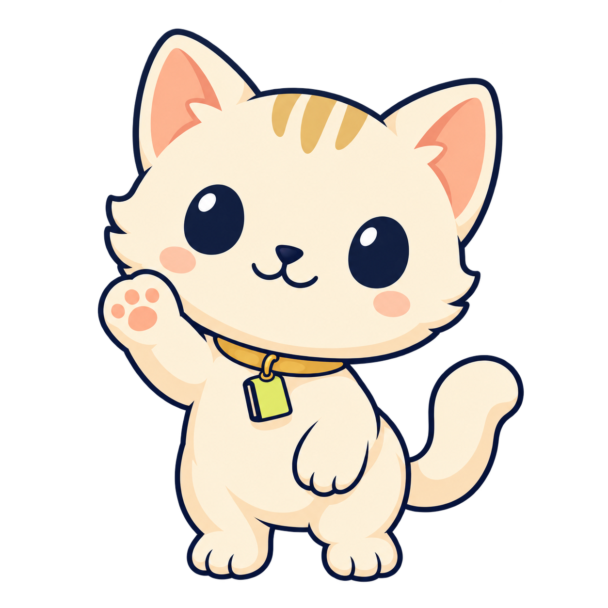
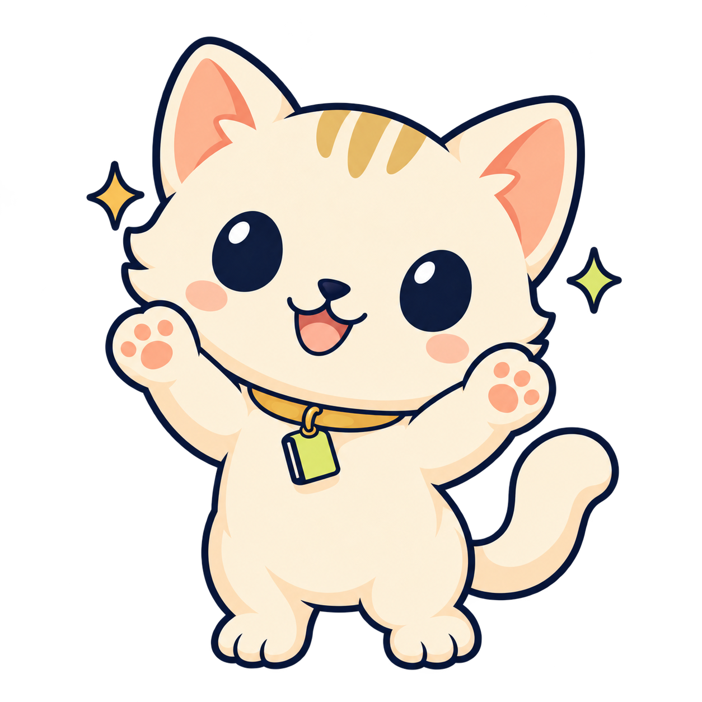

Six soft 2D poses · transparent PNGs · preview on Tally navy

Introduction & help
Empty states & first entry
Insights & category guidance
Savings goals & progress

Goals & milestones
Gentle budget guidance